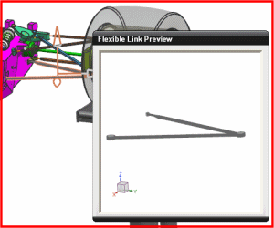

Finish defining the flexible link
The Flexible Link dialog box is still open from the previous step.
-
The Flexible Link Preview window shows you the meshed flexible body and its orientation relative to the absolute coordinate system.

-
Placement
Absolute Origin

Because the flexible body is in the same orientation as the corresponding link in the mechanism (relative to the absolute coordinate system), Absolute Origin is the appropriate selection.
Tip
You can press and hold the middle mouse button in the Flexible Link Preview window to rotate the previewed model, for visualization purposes.
-
Connections
-
The three markers in the list correspond to the origins of the two bushings and spherical joint defined on this link in the mechanism.
Verify that the three markers are mapped to the connection nodes that you defined in Advanced Simulation, in the previous Flexible Body activity. If you followed the meshing steps as specified in the activity, the connection nodes should be labeled with node IDs 1, 2, and 3, and the node IDs should be mapped to the following markers:
-
ball_jt4.i_marker
-
G001.i_marker
-
G002.i_marker
If the markers are not mapped to the correct nodes, you can enter the correct node IDs directly in the Node ID cell (simply click in the cell and type the ID number).
-
-
OK
Flexible Link dialog box